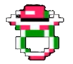
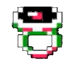
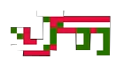
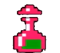
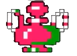
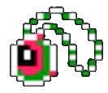
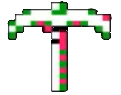
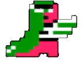

Haltian safiirisormusSormuksen saa papilta ensimmäisessä kapungissa. Sillä tunnistaudutaan, jotta pääsee kuninkaan puheille. |
 |
|---|---|
RubiinisormusTällä sormuksella voi liikuttaa ylimmän osan pylväsmuodostelmasta, jotta pelissä pääsee seuraavaan osaan elämän puusta. |
 |
AvaimetPelissä on useammanlaisia avaimia, jolla pääsee peliä eteenpäin vievistä ovista sisään. |
 |
Punainen lääkejuomaTämä juoma täyttää pelihahmon terveyden takaisin. |
 |
TaikajuomaTämä juoma täyttää pelihahmon taian ja terveyden takaisin. |
 |
RiipusVaihtoehtoinen esine. Pelissä tämän on tarkoitus antaa lisää voimaa pelaajan hyökkäyksiin. Ohjelmointivirhe kuitenkin sai aikaan, että esineen vaikutus on jo päällä pelin alussa ja riipus vähentääkin hyökkäystä. |
 |
HakkuTällä saa hakattua tietyn seinän, jotta pelissä pääsee eteenpäin. |
 |
LentosaappaatAntaa hetkellisen kyvyn lentää. Pelissä kun esineen käyttää, pelihahmo voi liikkua mihin suuntaan tahansa mukaanlukien suoraan ylöspäin. |
 |